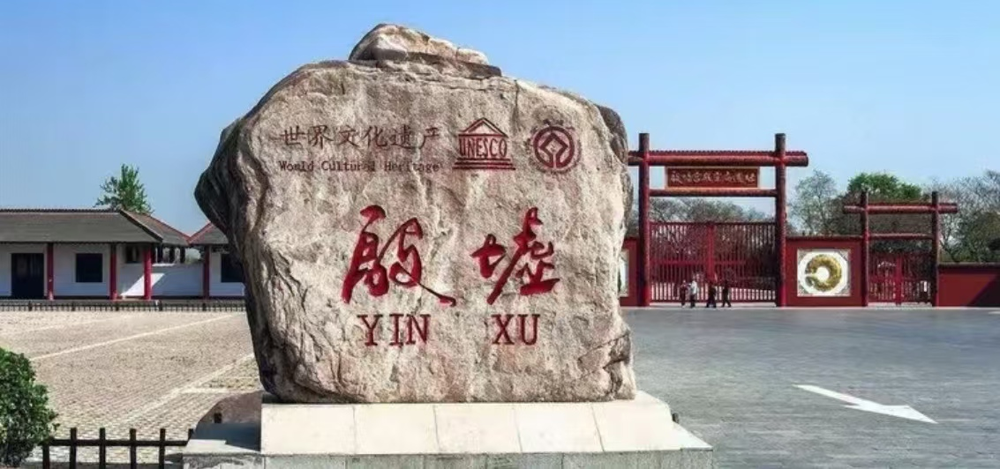
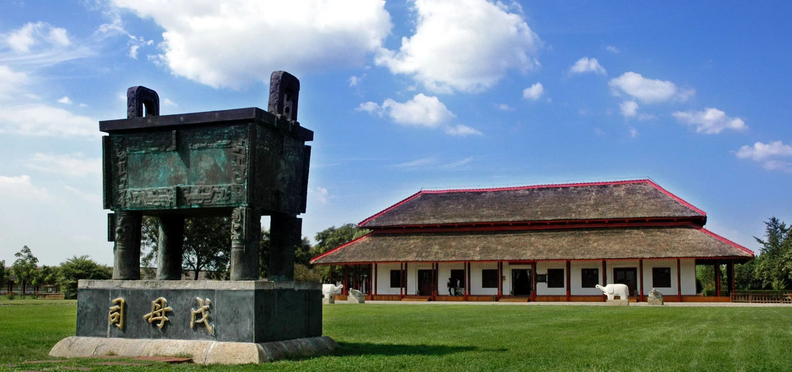

殷墟坐落于河南省安阳市殷都区，是中国商代晚期都城遗址，也是我国首个有文字记载并经考古证实的古代都城，入选世界文化遗产名录，为国家5A级历史人文景区。这里沉淀三千年殷商文明，是甲骨文发掘地、青铜文化瑰宝出土地。
景区涵盖宫殿宗庙、王陵遗址、甲骨坑、博物馆等多个片区，历史底蕴深厚，人文景观集中，既是研学游学圣地，也是了解华夏早期文明、探秘商代历史的经典旅游目的地。

📍 地址：河南省安阳市殷都区殷墟路1号
🎫 门票：成人通票70元；学生凭证半价；老人、儿童、军人、残疾人符合条件可免票入园
⏰ 开放时间
旺季：08:00—17:30 淡季：08:30—17:00，全天游览充足，闭园前一小时停止检票
🚗 交通指南
🍜 当地特色美食
景区入口 → 殷墟博物馆 → 宫殿宗庙区 → 妇好墓 → 甲骨窖穴 → 文化碑林 → 免费摆渡车前往王陵遗址 → 车马坑 → 祭祀遗址 → 游览结束返程。
全程游览约3至4小时，节奏舒缓，适合全家出游、研学参观，建议搭配讲解，体验更佳。
1. 历史遗址景区，请文明参观，禁止触摸、刻画文物遗迹。
2. 景区历史内容丰富，建议使用讲解服务，读懂殷商故事。
3. 户外路段较多，建议穿舒适鞋子，做好防晒与防寒。
4. 宫殿区与王陵区距离较远，务必乘坐免费摆渡车。
5. 尊重历史文化，保持园区安静，不喧哗打闹。
6. 节假日人流量大，建议错峰出行，提前线上预约购票。
春季气候舒适，适合漫步游园、研学观光；夏季室内展馆凉爽，适合避暑参观；秋季天高气爽，光线适宜，拍照氛围感极强；冬季游客稀少，环境安静，适合静心感受千年历史底蕴。